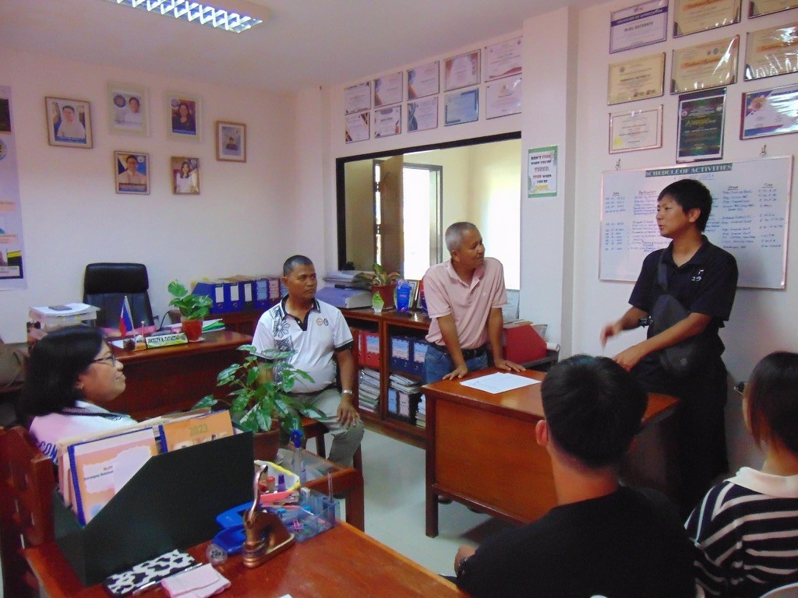
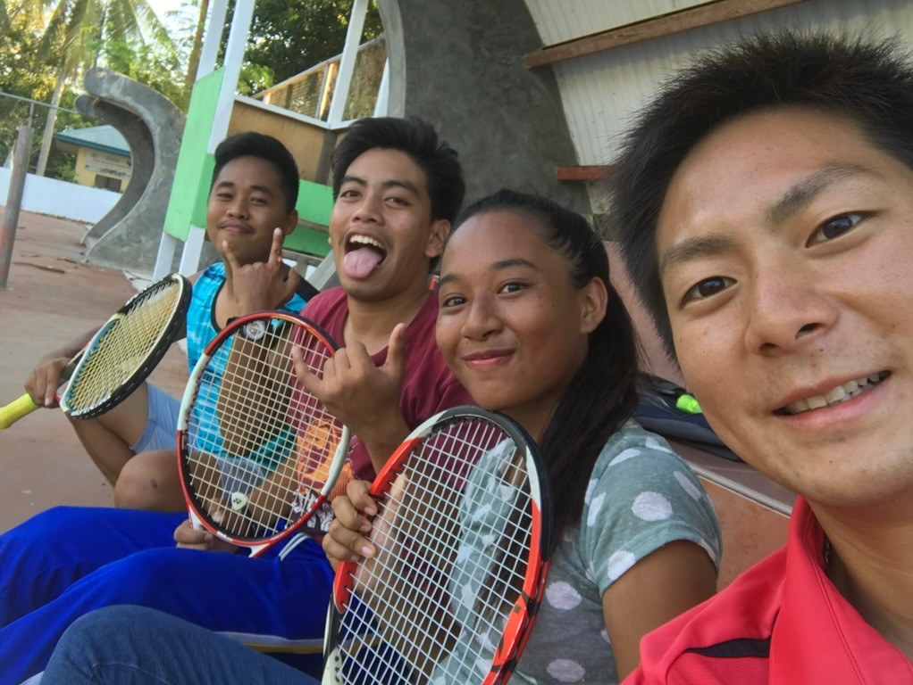

地域の大人との対話
SUNトーク、ツワトーク、キャリアトークで、多様な生き方と出会う。
Education
知識を伝えるだけでなく、人や仕事、自然、異文化との出会いから自分の問いを見つける。学校と社会をつなぐ学びを設計しています。

University
大阪人間科学大学心理学部で非常勤講師として「ボランティア活動論」などを担当。その後、島根県立大学地域政策学部でも教育に携わりました。現場の経験を持ち寄り、社会との関わり方を考える授業です。
J-GLOBAL経歴 ↗Three approaches
学び手が自分の経験と社会を結び直せるよう、対話と実体験を中心に置きます。
SUNトーク、ツワトーク、キャリアトークで、多様な生き方と出会う。
農林業の現場から、仕事、自然、暮らしのつながりを学ぶ。
フィリピンの人々との交流から、文化や社会課題を自分ごとにする。

Beyond Classroom
農林業体験では学校・行政・NPOの間を調整し、地域全体を学びの場へ。2026年度は津和野高校ソフトテニス部の部活動指導員として、日々の活動にも伴走しています。
農林業体験の活動報告 ↗